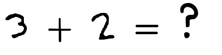

Mapping Between Categories
On Functors in Functional Programming
Lusy Vaseva
Introduction
Some Maths
Category Theory
- mathematical abstraction
- categories are sets, vector spaces, or types for computer science..

Category Theory 2
- there are mappings between them: an object can be "transferred" from one category to another
- mappings are structure preservent

So what are functors?
Structure preservent mappings between categories!
The Haskell Definition
"Types that can act like a box can be functors. You can think of a list as a box that can be empty or have something inside it, including another box!"


Attribution http://adit.io
The Haskell Definition 2
Functor is a type class. Very much like Eq, Ord, Show, ... It requires a type constructor that takes one parameter
class Functor f where
fmap :: (a -> b) -> f a -> f b
 Attribution http://adit.io
Attribution http://adit.io
An Example - Lists
map :: (a -> b) -> [a] -> [b]
instance Functor [] where
fmap = map
 Attribution http://adit.io
Attribution http://adit.io
Demo!
> fmap (2 +) [1,2,3]
You already know this!
Ruby
> [1, 2, 3].map { |n| n * n};
=> [1, 4, 9]
You already know this!
Javascript
> _.map([1, 2, 3], function(num){return num*3;});
=> [3, 6, 9]
From a functor to another functor
Tree vs Array
 [1, 3, 4, 6, 7, 8, 10, 13, 14]
[1, 3, 4, 6, 7, 8, 10, 13, 14]
Attribution https://en.wikipedia.org/wiki/File:Binary_search_tree.svg
{kind=link}
The Natural Transformation
alpha
F(A) ----------> G(A)
| |
| |
fmap f | | fmap f
| |
| |
v v
F(B) ----------> G(B)
alpha